Современные подходы и инструменты взаимодействия с БД
Современные подходы к взаимодействию с базами данных значительно эволюционировали, предлагая разработчикам более эффективные и удобные инструменты по сравнению с традиционными методами, такими как прямое использование SQL или API вроде ODBC и JDBC. Среди них особое место занимают объектно-реляционные мапперы (ORM), которые упрощают работу с данными, абстрагируя сложность низкоуровневого доступа к БД. Наиболее популярными ORM являются Django ORM, Eloquent ORM и SQLAlchemy, а также легковесные ORM-библиотеки.
ORM (Object-Relational Mapping, обхектно-реляционное отображение) — это технология, которая позволяет разработчикам взаимодействовать с базами данных, представляя данные как объекты языков программирования. ORM выступает прослойкой между базой данных и кодом, упрощая этот процесс: разработчик может создать объект в программе и записать его в базу или, наоборот, получить данные из базы и работать с ними как с объектом. Без ORM разработчику пришлось бы использовать SQL напрямую или вручную преобразовывать данные из базы в объекты. ORM автоматизирует этот процесс: программист пишет запрос на языке программирования, а ORM сопоставляет свойства объекта с полями базы, формируя SQL-запрос. Таким образом, разработчику не нужно писать SQL или заниматься переводом данных — ORM делает это автоматически, снимая лишнюю нагрузку. Его архитектура представлена на рис. 12.
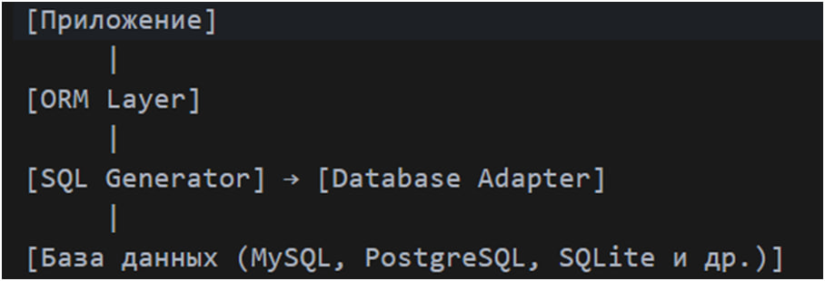
Рис. 12 – Архитектура ORM.
Компоненты архитектуры ORM включают: Приложение – это клиентская часть программы, которая использует ORM для взаимодействия с базой данных. ORM Layer – слой маппинга, преобразующий объекты в запросы к БД и обратно. SQL Generator -> Database Adapter – SQL Generator создает SQL-запросы, Database Adapter адаптирует их для конкретной СУБД. База данных – реляционная СУБД, где хранятся данные.
Назначение ORM — упростить работу с БД, устранить необходимость ручного написания SQL и обеспечить переносимость кода; особенности включают абстракцию SQL, поддержка миграции (механизм изменения схемы БД без написания SQL вручную), кросс-платформенность, но с возможными накладными расходами (дополнительные затраты ресурсов, возникающие при преобразовании сложных операций с данными, что снижает производительность и увеличивает потребление памяти) при сложных запросах.
Пример модели с использованием библиотеки SQLAlchemy на Python представлен на рис. 13, а пример запроса с использованием ORM изображен на рис. 14:
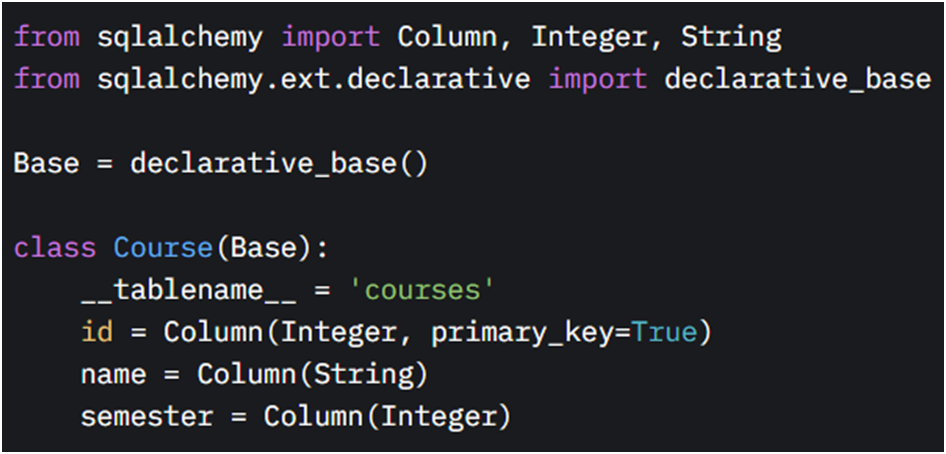
Рис. 13 – Модель на языке программирования Python с использованием библиотеки SQLAlchemy.
В данной модели создается таблица ‘courses’ с полями id (ключ), name (строка), semester (число).
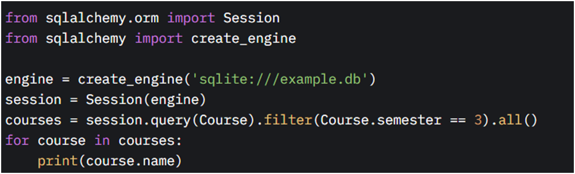
Рис. 14 – Запрос на языке программирования Python с использованием ORM.
В этом запросе Session(engine) – создает ORM-сессию, session.query(Course) – строит запрос через ORM, преобразует в SQL, .filter(Course.semester == 3) – фильтрует в объектном стиле, .all() – возвращает объекты в Course. Этот запрос извлекает все курсы с семестром 3 и выводит их названия.
Django ORM (Object-Relational Mapping) является конкретной реализацией ORM для Python-фреймворка Django, которая значительно упрощает взаимодействие с базами данных для разработчиков веб-приложений. Django ORM позволяет работать с базами данных, используя Python-код вместо прямых SQL-запросов, что делает процесс более интуитивным и менее подверженным ошибкам. Это особенно важно в условиях, когда разработчики стремятся ускорить разработку и повысить её качество. Архитектура Django ORM представлена на рис.15.
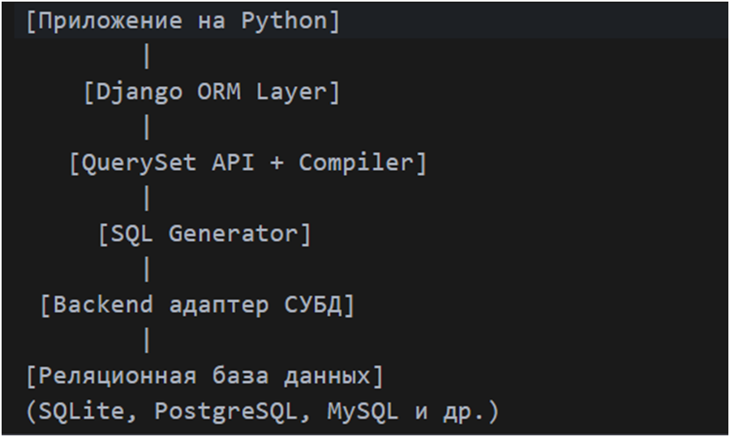
Рис. 15 – Архитектура Django ORM.
Компоненты архитектуры: Приложение на Python – клиентский уровень, где описывается бизнес-логика; Django ORM Layer – обеспечивает работу с данными через объекты и методы; QuerySet API – высокоуровневый интерфейс для работы с данными; SQL Generator преобразует вызовы ORM в SQL-запросы; Backend адаптер СУБД отвечает за выполнение SQL-запросов в конкретной СУБД; Реляционная СУБД – хранение и обработка данных.
Процесс взаимодействия с базой данных через Django ORM включает следующие этапы: Настройка соединения; Определение моделей – модели создаются в файле, представляя таблицы БД; Построение запросов – используются методы ORM, которые генерируют SQL-запросы; Выполнение запросов – Django отправляет запросы в БД и возвращает данные в виде объектов Python; Сохранение изменений – изменения фиксируются, что синхронизирует объекты с БД.
Назначение Django ORM заключается в упрощении работы с БД, минимизации ручного написания SQL и обеспечении переносимости кода между различными СУБД. Это особенно полезно для веб-разработки, где требуется быстрое создание приложений с минимальными затратами на управление данными. Мигранты, как часть ORM, позволяют эволюционировать схему БД без потери данных.
Пример модели в models.py на Python представлен на рис. 16, а пример запроса представлен на рис. 17.
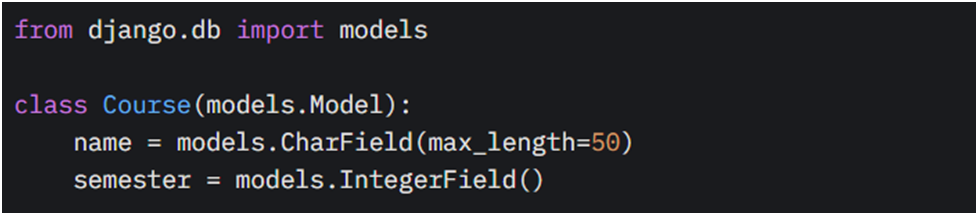
Рис. 16 – Модель в models.py на языке программирования Python.
Эта модель представляет таблицу ‘courses’ с полями ‘name’ и ‘semester’.
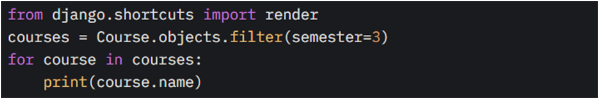
Рис. 17 – Запрос на языке программирования Python.
Данный запрос выводит названия курсов с семестром 3, демонстрируя, как ORM упрощает фильтрацию без написания SQL.
Eloquent ORM – это ORM, встроенный в Laravel (бесплатный PHP-фреймворк с открытым исходным кодом, специально разработанный для создания сложных сайтов и веб-приложений; PHP – скриптовый язык программирования), который позволяет разработчикам работать с базами данных, используя объектно-ориентированный подход, реализуя шаблон Active Record. Он предоставляет возможность работы с базами данных через модели, которые представляют собой классы, соответствующие таблицам в базе данных. Архитектура взаимодействия Eloquent ORM с БД представлена на рис. 18.
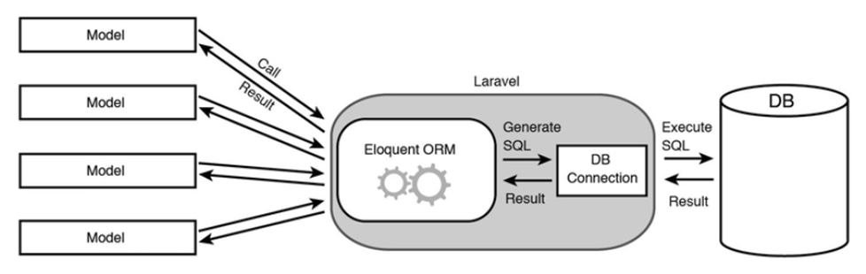
Рис. 18 – Архитектура Eloquent ORM.
Основные компоненты этой архитектуры:
1. Модели – ключевой элемент, управляющий процессом. Это классы, предоставляющие таблицы БД, инициируют запросы и получают результаты;
2. Eloquent ORM – центральный компонент, генерирует SQL-запросы и обрабатывает данные, интегрирован с Laravel;
3. DB Connection – обеспечивает связь между Eloquent ORM и базой данных, передает SQL-запросы и возвращает результаты;
4. База данных – хранилище данных, где СУБД интерпретирует и выполняет переданные SQL-запросы (Execute SQL) через оптимизированный процесс, возвращая данные.
Eloquent ORM – это реализация паттерна Active Record, встроенная в PHP-фреймворк Laravel. В Eloquent ORM шаблон Active Record означает, что таблицы базы данных представлены как классы, а строки — как объекты этих классов. Она предназначена для упрощения взаимодействия с реляционными базами данных на уровне объектов, автоматизации операций CRUD (Create, read, Update, Delete), описания и обработки связей между таблицами, а также Eloquent абстрагирует разработчика от написания SQL вручную, позволяя работать с данными через модели. В отличие от других ORM, Eloquent предлагает более интуитивно понятный и лёгкий способ работы с данными, что делает его особенно популярным в веб-разработке на PHP.
В Laravel каждая модель представляет собой класс, который наследуется от «Illuminate\Database\Eloquent\Mode»l. Модель связана с таблицей в базе данных, имя которой определяется автоматически — как множественное число названия класса (например, модель «Student» связывается с таблицей «students»). Пример модели представлен на рис. 19.
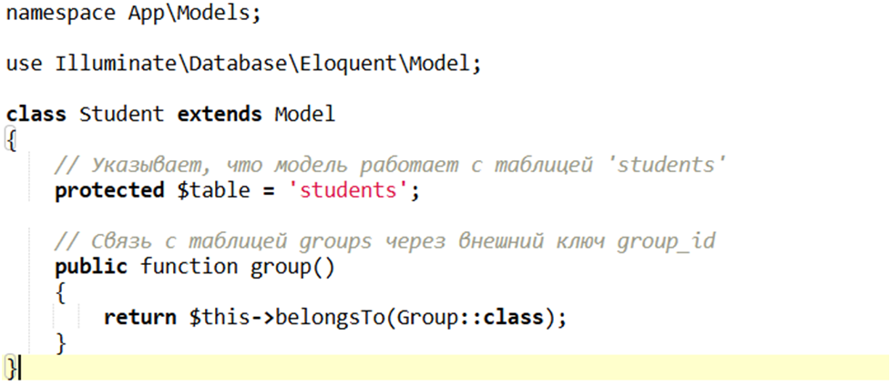
Рис. 19 – Пример модели в Laravel.
В данной модели класс «Student» представляет таблицу «students». Метод «group()» описывает отношение "принадлежит" (belongsTo) к таблице «groups» по внешнему ключу «group_id».
Перед запросом необходимо поставить задачу, например: Получить всех студентов из группы P3110 и вывести их имя и факультет. Пример запроса представлен на рис. 20.
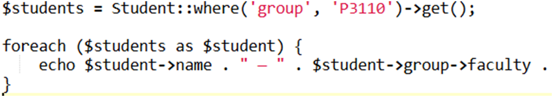
Рис. 20 – Пример запроса с использованием Eloquent ORM в Laravel.
Этот код выполняет SQL-запрос, представленный на рис. 21.
Рис. 21 – Выполнение SQL-запроса.
А при обращении к «$student->group->faculty» происходит загрузка связанной таблицы «groups».
Работает это следующим образом: модель — класс ‘Student’, описывающий структуру таблицы ‘students’ и связи с другими таблицами; запрос — вызов метода ‘where('group', 'P3110')’ формирует условие SQL-запроса; генерация SQL — ORM преобразует вызов в SQL-запрос через ‘QueryBuilder’; выполнение — запрос отправляется в СУБД через драйвер; обработка результатов — результаты конвертируются в объекты ‘Student’; при обращении к ‘$student->group’ Eloquent автоматически загружает данные из связанной таблицы ‘groups’.
SQLAlchemy — это Python-библиотека, которая позволяет работать с реляционными базами данных с помощью ORM. SQLAlchemy состоит из двух отдельных компонентов, известных как Core и ORM, архитектура представлена на рис. 22.
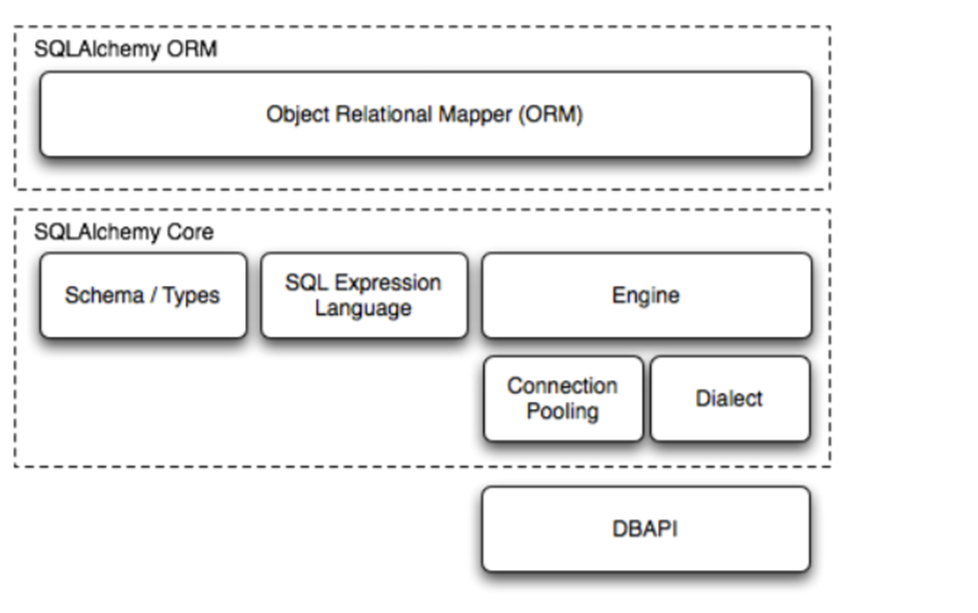
Рис. 22 – Архитектура SQLAlchemy.
Среди основных компонентов: SQLAlchemy Core – ядро (Core) само по себе является полнофункциональным набором инструментов абстракции SQL, обеспечивающим плавный уровень абстракции для широкого спектра реализаций и вариантов поведения DBAPI (Database API – стандартный интерфейс Python для взаимодействия с базами данных, это низкоуровневый API, который SQLAlchemy использует для связи с конкретной СУБД), а также языка выражений SQL, который позволяет выражать язык SQL с помощью генеративных выражений Python. На рис.22 схематически показано из чего состоит Core. Это схема, типы, язык выражений SQL (SQL Expression Language ), Engine, это все поверх DBAPI; SQLAlchemy ORM — это объектно-реляционный маппер (Object Relational Mapper), который предоставляет высокоуровневый уровень абстракции для работы с базами данных через Python-объекты. Он строится поверх SQLAlchemy Core и позволяет разработчикам взаимодействовать с данными, представляя таблицы как классы, а строки — как экземпляры этих классов, избегая ручного написания сложных SQL-запросов.
Основные этапы взаимодействия с БД через SQLAlchemy: Определение модели – создаются классы, представляющие таблицы в базе данных. Атрибуты классов соответствуют столбцам; Создание движка – устанавливается соединение с СУБД; Работа с сессией – через сессию выполняются операции над данными: добавление, обновление, удаление и выборка записей; Формирование и выполнение запроса – используя методы ORM или SQL-выражения, формируется запрос. Он выполняется только при необходимости; Обработка результатов – результаты возвращаются в виде объектов модели. Можно исользовать их атрибуты для дальнейшей логики; Транзакции и изменения – поддерживаются транзакции, миграции, пакетные операции; Завершение работы – сессия закрывается, изменения фиксируются, соединение освобождается.
Данная библиотека предназначена для упрощения работы с базами данных, предоставляя ORM для объектного доступа и низкоуровневый интерфейс SQL, что позволяет эффективно управлять данными и минимизировать написание сложных запросов. Среди особенностей можно выделить следующие: гибкость (ORM и Core), поддержка асинхронности для современных приложений, кросс-платформенность, высокая настраиваемость. Пример модели на Python представлен на рис. 23.
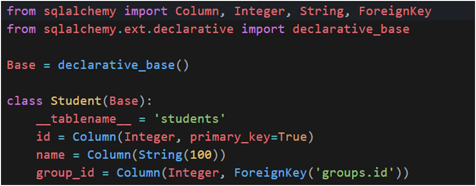
Рис. 23 – Пример модели на Python с использованием SQLAlchemy.
Модель ‘Student’ описывает таблицу ‘students’, где каждое поле соответствует столбцу в БД. Пример запроса на Python представлен на рис. 24.
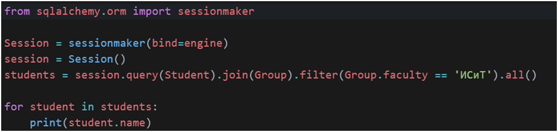
Рис. 24 – Пример запроса на Python с использованием SQLAlchemy.
В данном примере создается сессия, выполняется запрос с соединением таблиц ‘students’ и ‘groups’, происходит фильтрация студентов по факультету ‘ИСиТ, возвращение результата в виде объектов ‘Student’.
Легковесные ORM библиотеки представляют собой упрощённые реализации объектно-реляционного отображения, которые обеспечивают минимальный уровень абстракции над SQL, при этом сохраняя читаемость кода и простоту использования. В отличие от более тяжёлых решений вроде Django ORM или SQLAlchemy, легковесные ORM ориентированы на низкий порог входа, минимальную конфигурацию, высокую производительность и гибкость в небольших проектах.
Среди наиболее популярных легковесных ORM библиотек можно выделить следующие:
1. Pewee (Python) - это легковесная ORM-библиотека для языка программирования Python, предназначенная для упрощения взаимодействия с реляционными базами данных. Она реализует паттерн Active Record, при котором каждый объект модели напрямую отображается на строку в таблице базы данных, а методы модели позволяют выполнять операции над данными без необходимости писать SQL вручную.
2. PonyORM – это легковесная ORM-библиотека для работы с реляционными базами данных на Python. Она предоставляет высокоуровневый интерфейс для создания, чтения, обновления и удаления записей, используя объектную модель , но при этом не навязывает сложной архитектуры, как это делают более тяжёлые ORM (например, SQLAlchemy или Django ORM).
PonyORM предназначена для упрощения взаимодействия с реляционными базами данных в приложениях на Python, позволяя разработчикам работать с данными через объекты и методы Python, вместо написания SQL-запросов. Архитектура данной библиотеки представлена на рис. 25.
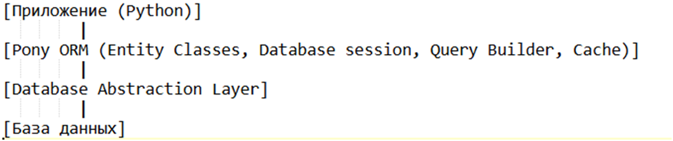
Рис. 25 – Архитектура библиотеки PonyORM.
Компоненты архитектуры включают: Приложение - разработчики пишут код на Python, используя Pony ORM для взаимодействия с базой данных; PonyORM: Entity classes – Python-классы, которые представляют таблицы в базе данных, каждый атрибут класса соответствует столбцу таблицы; Database Session – управляет соединением с базой данных и обеспечивает транзакции; Query Builder – преобразует вызовы методов и атрибутов Python в SQL-запросы: Cache – кэширует объекты для повышения производительности; Database Abstraction Layer – обеспечивает взаимодействие с различными СУБД через унифицированный интерфейс; База данных – реляционная база данных, с которой взаимодействует PonyORM.
В Pony ORM взаимодействие с базой данных начинается с определения классов-сущностей, представляющих таблицы, затем настраивается соединение с базой данных, создается сессия для управления транзакциями, и выполняются операции создания, чтения, обновления и удаления записей, которые автоматически преобразуются в SQL-запросы. Пример модели представлен на рис. 26.
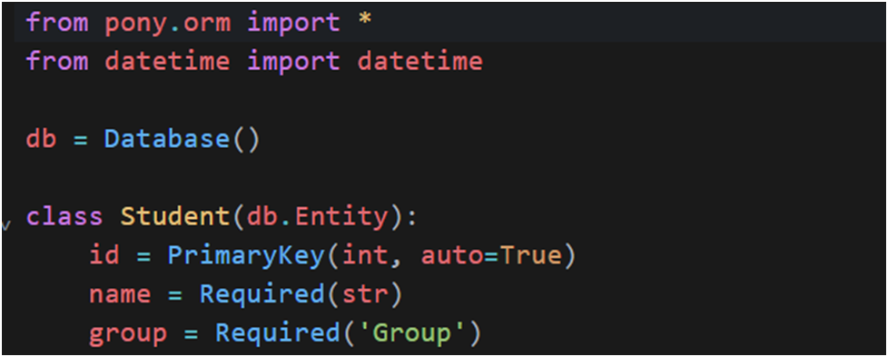
Рис. 26 – Пример модели с использованием библиотеки PonyORM на Python.
Здесь 'Student' — модель, которая представляет собой строку из таблицы 'students'. Поле 'group' ссылается на другую модель 'Group'. Пример запроса представлен на рис. 27.
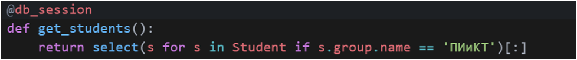
Рис. 27 – Пример запроса на Python через PonyORM.
PonyORM преобразует этот код в SQL-запрос, представленный на рис. 28.
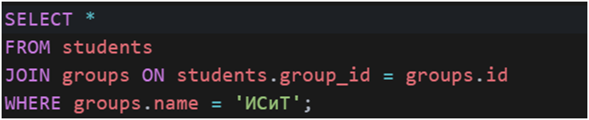
Рис. 28 – SQL-запрос, преобразованный PonyORM.
Данный запрос вернет все строки из таблицы ‘students’, связанные с группой «ИСиТ».
Библиотека Peewee предназначена для работы с реляционными СУБД, удобного описания моделей и связей между ними, а также тестирования и прототипирования. Архитектура данной библиотеки представлена на рис. 29.
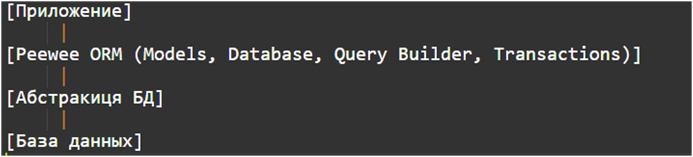
Рис. 29 – Архитектура библиотеки Peewee.
Среди основных компонентов: Приложение – разработчики пишут код на Python, используя Peewee для взаимодействия с базой данных; Models – класс, представляющий таблицу в БД; Database - управляет соединением с базой данных и предоставляет интерфейс для выполнения запросов; Query Builder - позволяет строить и выполнять SQL-запросы через Python-методы; Transactions - управляет транзакциями для обеспечения целостности данных; Абстракция базы данных – обеспечивает взаимодействие с различными СУБД через унифицированный интерфейс; База данных – Реляционная база данных, с которой взаимодействует Peewee.
Процесс взаимодействия с базой данных с использованием библиотеки Peewee выглядит следующим образом: определение модели, создание соединения, выполнение запроса, генерация SQL, обработка результатов, закрытие соединения. Пример модели представлен на рис. 30.
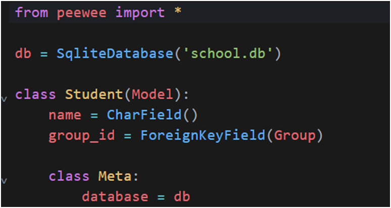
Рис. 30 – Пример модели на Python с использованием Peewee.
Эта модель представляет таблицу ‘students’. Поле ‘name’ соответствует столбцу VARCHAR (аббревиатура от "variable character", что означает строка переменной длины), ‘group_id’ — внешний ключ на таблицу ‘groups’. Прмер запроса представлен на рис. 31.
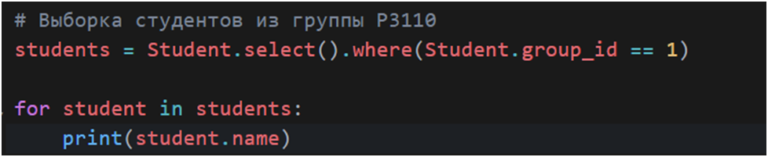
Рис. 31 – Пример запроса на Python через Peewee.
Этот код генерирует SQL-запрос, представленный на рис. 32.
Рис. 32 – сгенерированный SQL-запрос.
Предыдущая страница |
Следующая страница